Introduction
This vignette outlines the process of haplotype reconstruction and genetic map estimation for an F2 population, using Hidden Markov Models (HMM) and recombination frequency (RF) data.
This approach is applied across multiple chromosomes, using both reference genome order and optimized marker order.
Load Data
# Ordered Markers
url1 <- "https://raw.githubusercontent.com/vegaalfaro/geneticMapRFiles/main/R_data/ordered_markers.RData"
# Download file
if (!file.exists("ordered_markers.RData")) {
download.file(url1, destfile = "local_copy.ordered_markers.RData")}
# Load
load("local_copy.ordered_markers.RData")Reconstruction and genetic Map pipeline
We now apply the full reconstruction and map estimation pipeline to each chromosome. This includes:
Estimating the recombination frequency and error rate for haplotype reconstruction.
Performing haplotype reconstruction using a Hidden Markov Model (HMM).
Estimating the genetic map.
Generating diagnostic plots including haplotype patterns and Marey maps.
The final output is stored in a list maps_ordered, which
contains:
The reconstructed genotype matrix (
geno_hmm)The estimated genetic map (
genetic_map)Plots of haplotypes (
haplo_plots) and Marey plots (marey_plot)
This loop allows us to automate map construction across all chromosomes in principle (CHR1 to CHR9). Here we show only an example of how it works with three chromosomes.
If you prefer to work each chromosome independently, the code below should be still helpful, take the code out of the loop and make sure to work one chromosome at a time by renaming them properly and it should work.
Optimized order
#--- Execution Loop for several Chromosomes ----
# First 3 chromosomes as an example:
chromosomes <- paste0("CHR", 1:3) # List of chromosome names modify the number of chromosomes here.
maps_ordered <- list() # Store results for each chromosome
# Using optimized order of markers
# Ordered markers----
for (chr in chromosomes) {
cat("\nProcessing", chr, "...\n")
# Extract genotype data
geno_data <- ordered_results[[chr]]$ordered_geno
# Estimate adjacent recombination frequency
resulti <- MLEL(geno_data,
LOD = FALSE,
pop.type = "F2",
adjacent = TRUE,
n.core = 4)
mean_rf <- mean(resulti$value, na.rm = TRUE)
cat("Mean Adjacent Recombination Frequency for", chr, ":", mean_rf, "\n")
# Run haplotype reconstruction using estimated RF as transition probability
geno_hmm <- haplotype_reconstruction(geno_data, r = mean_rf)
# Estimate genotyping error
error_rate <- estimate_error(geno_data, geno_hmm)
cat("Estimated Genotyping Error for", chr, ":", error_rate, "\n")
# Generate genetic map
genetic_map <- estimate_map(geno_hmm)
# Plot results
haplo_plots <- plot_reconstructed_haplo(geno_data, geno_hmm)
print(haplo_plots$p1)
print(haplo_plots$p2)
# Marey Plots
marey <- plot_marey(genetic_map, chr)
# print(marey)
# Store results
maps_ordered[[chr]] <- list(geno_hmm = geno_hmm,
genetic_map = genetic_map,
haplo_plots = haplo_plots,
marey_plot = marey)
}
#>
#> Processing CHR1 ...
#> Mean Adjacent Recombination Frequency for CHR1 : 0.01714311
#> Estimated Genotyping Error for CHR1 : 0.0107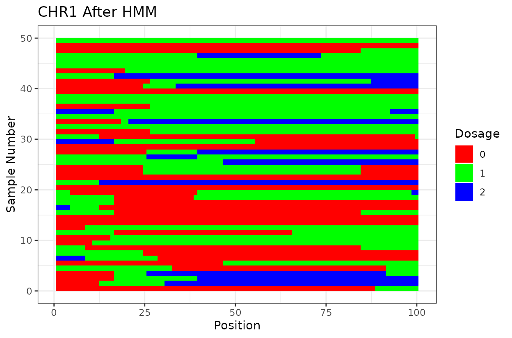
#>
#> Processing CHR2 ...
#> Mean Adjacent Recombination Frequency for CHR2 : 0.02049571
#> Estimated Genotyping Error for CHR2 : 0.01113924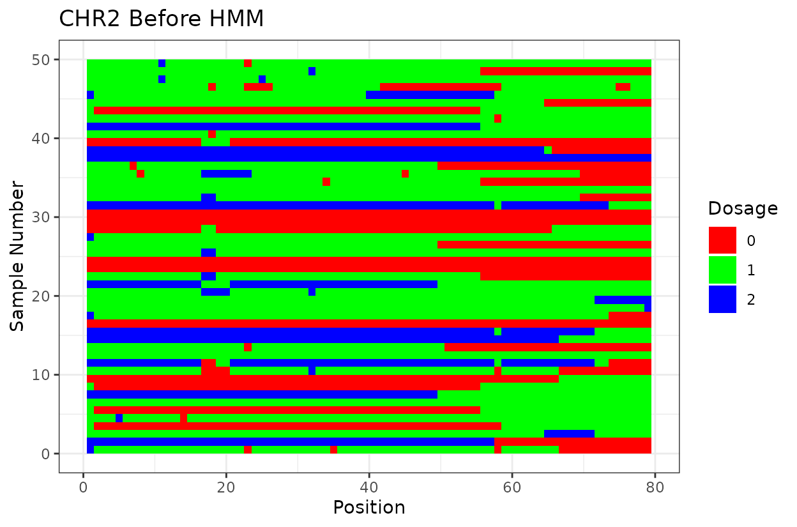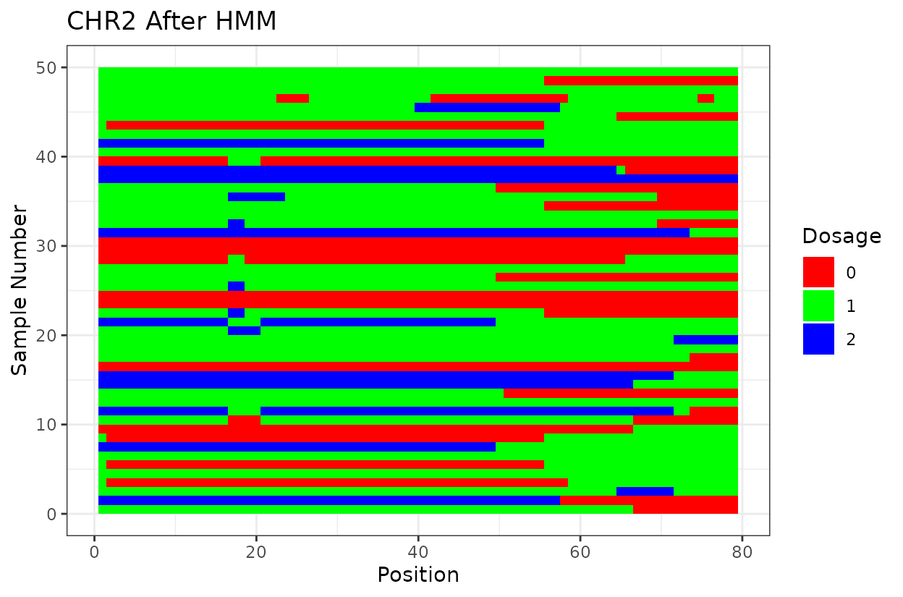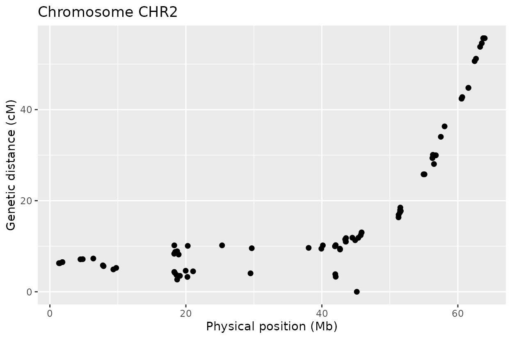
#>
#> Processing CHR3 ...
#> Mean Adjacent Recombination Frequency for CHR3 : 0.01617712
#> Estimated Genotyping Error for CHR3 : 0.01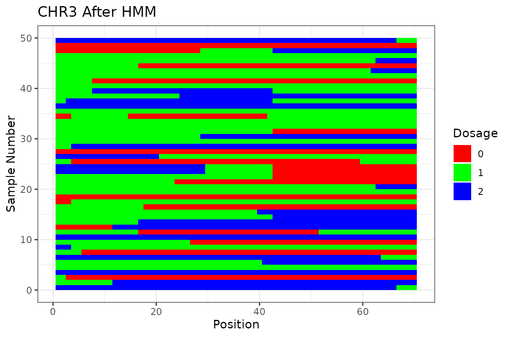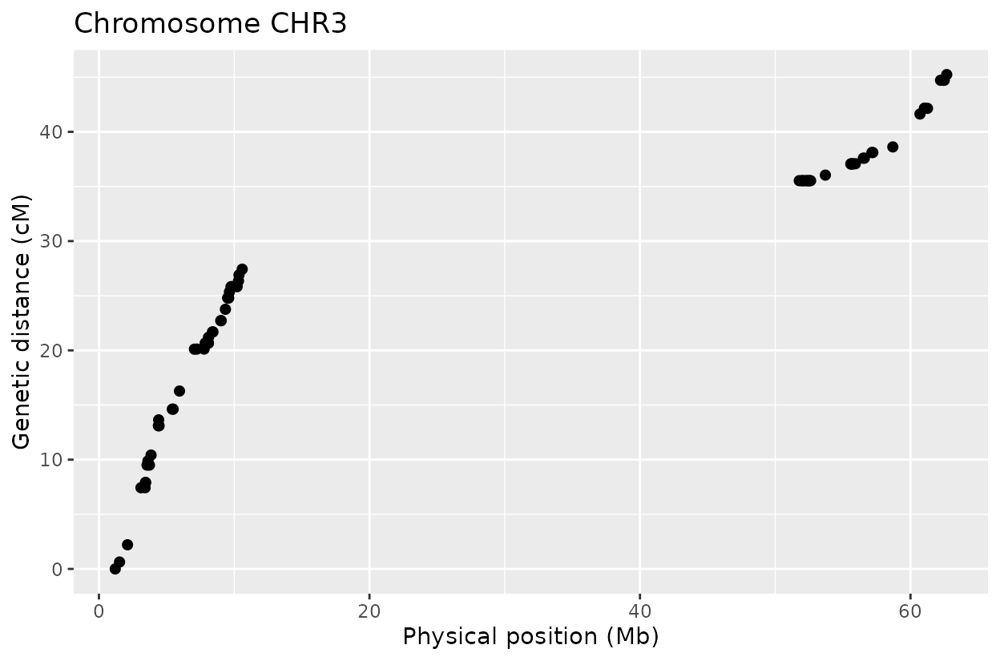
There is value in creating a pipeline that automates the process of
haplotype reconstruction using tools available in
MapRtools. It allows the user and other researchers to
reproduce the results. Genetic maps are usually “manually curated” which
is not best practice although in many cases acceptable. This is a step
towards reproducible genetic map construction.
Let’s look at the output. First we have two similar plots that show the dosage (genotype) at different positions (SNPs loci). I’d like to highlight that even after all the quality control on SNP marker filtering, there are still genotyping errors. This shows that in this case GBS but really any other genotyping technology is prone to erros. But no worries! We can reconstruct the haplotypes.
In experimental populations like F2s, it is common to observe genotyping errors and missing data. These issues can preclude us from observing the underlying true haplotypes. Also, the haplotypes are supposed to vary smoothly, quick haplotype switches are likely not true biology. Think about it, the chromosome can only recombine so many times. To address this, we implement a haplotype reconstruction step using a Hidden Markov Model (HMM), which infers the most likely sequence of underlying genotypes (states) from the observed marker data.
How do haplotype reconstruction work?
In a nutshell the haplotype_reconstruction function
performs haplotype reconstruction using an HMM model. It applies the
Viterbi algorithm to infer the most likely sequence of true genotypic
states, accounting for genotyping errors and missing data.
The function haplotype_reconstruction() uses an HMM with
the following key components:
States: “0”, “1”, “2” represent homozygous reference, heterozygous, and homozygous alternate genotypes, respectively.
Symbols: “0”, “1”, “2”, “NA” correspond to observed marker values, including missing data.
Start Probabilities: Initial probabilities of each state (e.g., 1:2:1 for F2 segregation).
Transition Matrix: Defines the probability of moving between states, based on a recombination frequency r.
Emission Matrix: Defines the probability of observing a symbol given a true state, adjusted by a user-specified genotyping error rate and the overall proportion of missing data.
Currently this function works only for F2 populations on experimental crosses. We are developing the function to work more broadly with other types of populations.
Why it matters?
We can clearly see that after reconstructing the haplotypes using the HMM approach the haplotypes better reflect biology. Look for example at the green line at position 62.5 in chromosome 1 which is likely a genotyping error. The HMM recognizes it and fixes it returning a more smooth haplotype switch.
Other considerations
For example, on chromosome 2 around position 18, most rapid haplotype switches are corrected, but a cluster remains. These may reflect genotyping errors that remain. Increasing manually the error rate that was calculated parameter can help resolve them. Plots like this are powerful for visualizing which segments of the parental genome each progeny inherited and identifying problematic regions.
The Marey plot of chromosome 2 also shows that some markers may potentially be out of order in the reference genome.
Reference genome order
Below is the same pipeline applied using the marker order from the reference genome. Some discrepancies appear when compared to the optimized order, suggesting that the W357B genome may require refinement. Future improvements, such as long-read sequencing and T2T assemblies, could help resolve these inconsistencies.
# Reference genome order----
chromosomes <- paste0("CHR", 1:3)
maps_ref_genome <- list() # Store results for each chromosome
# Using reference genome order or markers
for (chr in chromosomes) {
cat("\nProcessing", chr, "...\n")
# Extract genotype data
geno_data <- ordered_results[[chr]]$original_geno
# Estimate adjacent recombination frequency
resulti <- MLEL(geno_data,
LOD = FALSE,
pop.type = "F2",
adjacent = TRUE,
n.core = 4)
# Run haplotype reconstruction again with estimated error rate
geno_hmm <- haplotype_reconstruction(geno_data, error_rate = error_rate)
# Estimate genotyping error
error_rate <- estimate_error(geno_data, geno_hmm)
cat("Estimated Genotyping Error for", chr, ":", error_rate, "\n")
# Generate genetic map
genetic_map <- estimate_map(geno_hmm)
# Plot results
haplo_plots <- plot_reconstructed_haplo(geno_data, geno_hmm)
print(haplo_plots$p1)
print(haplo_plots$p2)
# Marey Plots
marey <- plot_marey(genetic_map, chr)
# print(marey)
# Store results
maps_ref_genome[[chr]] <- list(geno_hmm = geno_hmm,
genetic_map = genetic_map,
haplo_plots = haplo_plots,
marey_plot = marey)
}
#>
#> Processing CHR1 ...
#> Estimated Genotyping Error for CHR1 : 0.0113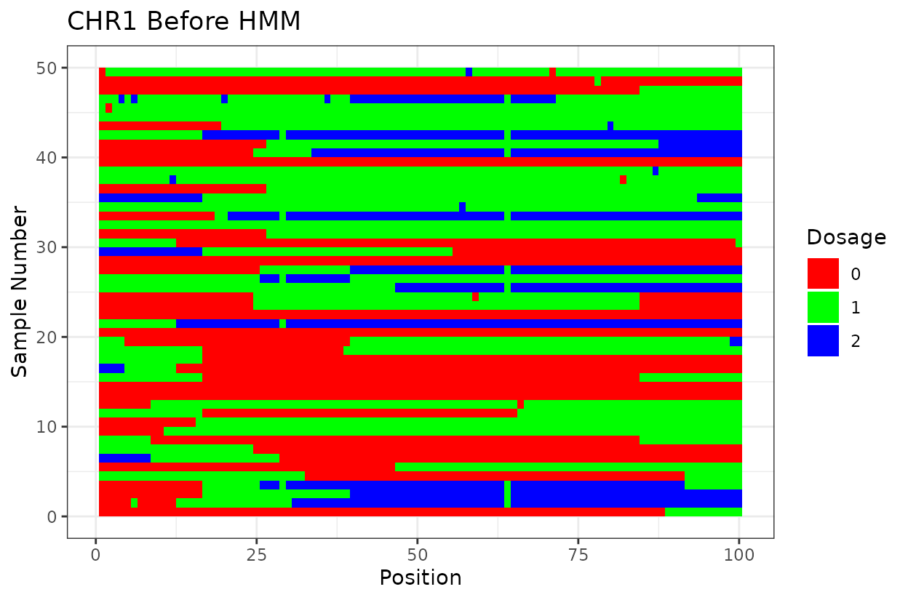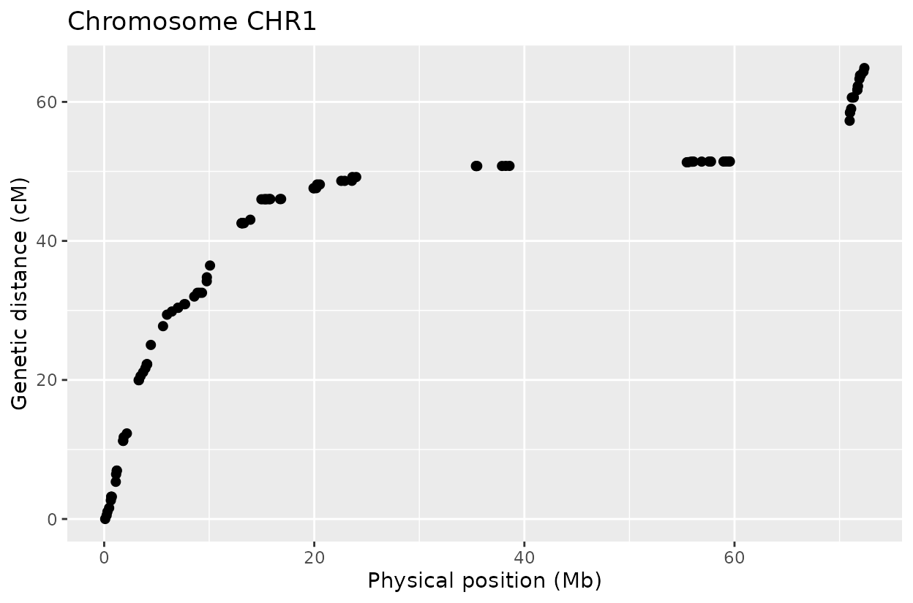
#>
#> Processing CHR2 ...
#> Estimated Genotyping Error for CHR2 : 0.01468354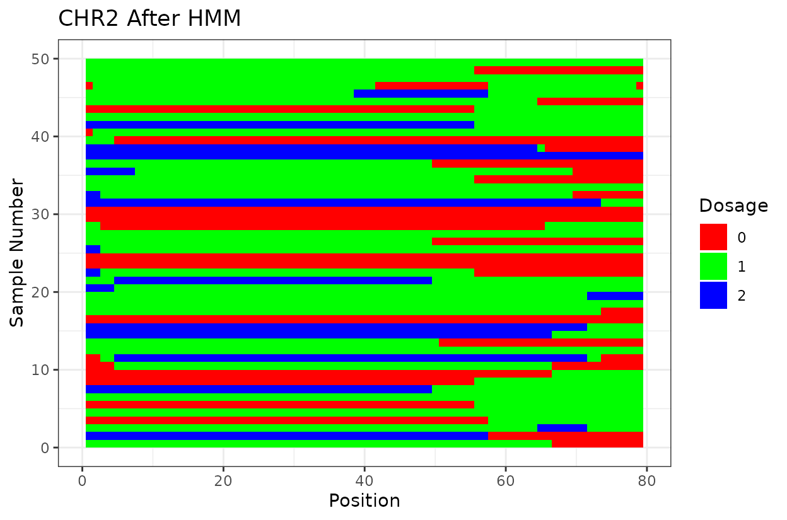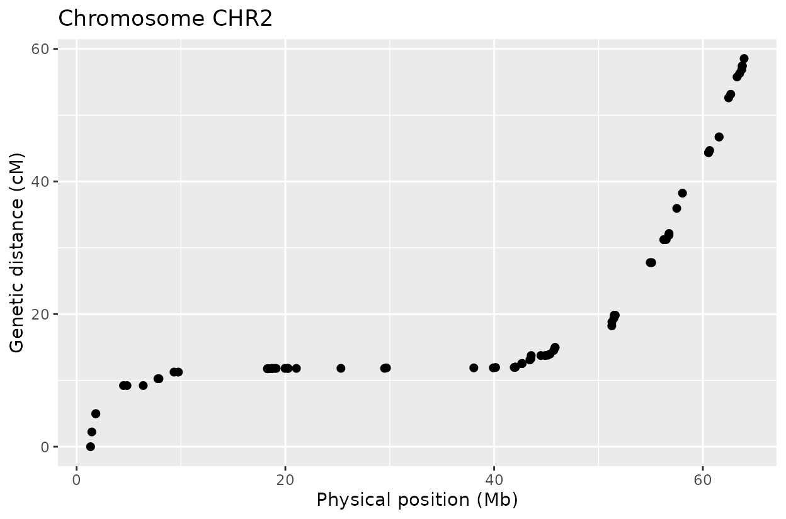
#>
#> Processing CHR3 ...
#> Estimated Genotyping Error for CHR3 : 0.009Map Visualization
Now we are going to visualize the maps. In the examples above I am showing only 3 chromosomes to keep it simple but the idea to visualize the map is better exemplified using all 9 chromosomes of Beta vulgaris.
# Get the chromosome names
chromosomes <- names(maps_ordered)
# Combine all genetic maps into a single data frame for Ref Genome Ordered Markers
MAP_Ref_Genome_Order <- do.call(rbind, lapply(chromosomes, function(chr) maps_ref_genome[[chr]]$genetic_map))
# Combine all genetic maps into a single data frame for Order Optimized Markers
MAP_Optimized_Order <- do.call(rbind, lapply(chromosomes, function(chr) maps_ordered[[chr]]$genetic_map))Example with optimized-order map
# Order-optimized map
p_order <- ggplot(MAP_Optimized_Order, aes(position_Mb, position_cM))+
geom_point(shape = 21,
size = 1.8,
fill = "#A680B8", # Use purple color
color = "#2C3E50")+
labs(
x = "Physical Position",
y = "Genetic distance (cM)"
)+ theme(
plot.title = element_text(size = 13),
axis.text.y = element_text(size = 12),
axis.text.x = element_text(size = 12),
axis.title.y = element_text(size = 12.5),
axis.title.x = element_text(size = 12.5),
panel.background = element_rect(fill = "#FAF3E0", color = NA),
panel.grid.major = element_line(color = "#D5DBDB", size = 0.1),
panel.grid.minor = element_blank()
) +
facet_wrap(~chrom) +
ggtitle("Optimized Order")
print(p_order)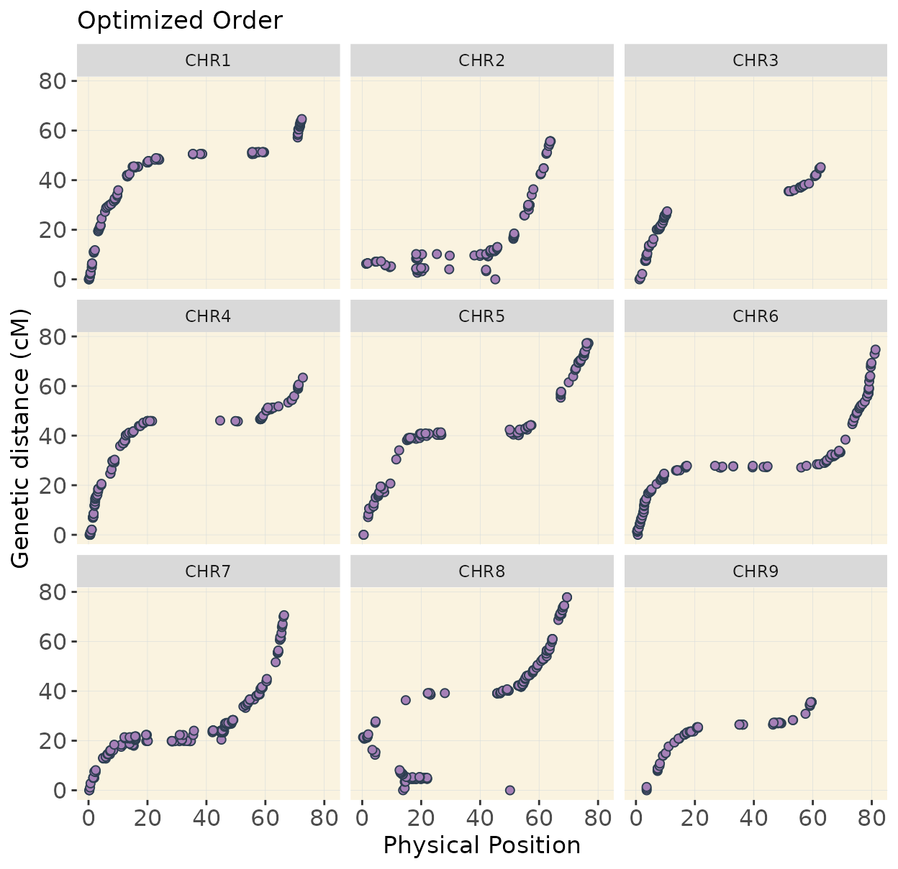
In chromosomes 2 and 8, the optimized genotype matrix (ordered using SALOD in previous steps) shows an inversion in the first half. This discrepancy is not observed when using the reference genome order, as markers are arranged and compared according to the same reference, so no deviations are expected.
I do not have definitive prove that the optimized order is the real order but linkage mapping is used in genome assemblies to confirm reference genome order.
Example with reference genome order
# Reference Genome Order map
p_ref <- ggplot(MAP_Ref_Genome_Order, aes(position_Mb, position_cM))+
geom_point(shape = 21,
size = 1.8,
fill = "#A680B8", # Use purple color
color = "#2C3E50")+
labs(
x = "Physical Position",
y = "Genetic distance (cM)"
)+ theme(
plot.title = element_text(size = 13),
axis.text.y = element_text(size = 12),
axis.text.x = element_text(size = 12),
axis.title.y = element_text(size = 12.5),
axis.title.x = element_text(size = 12.5),
panel.background = element_rect(fill = "#FAF3E0", color = NA),
panel.grid.major = element_line(color = "#D5DBDB", size = 0.1),
panel.grid.minor = element_blank()
) +
facet_wrap(~chrom) +
ggtitle("Reference Genome Order")
print(p_ref)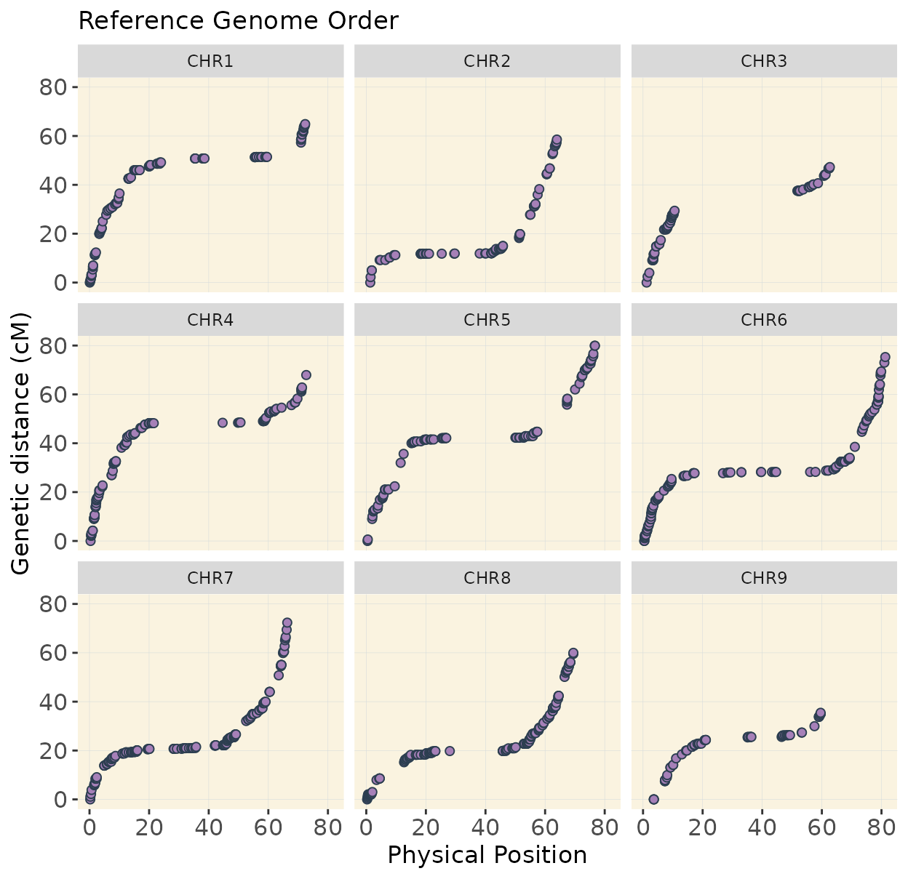
Recover genotype matrix and plot the coverage
This code extracts the names of chromosomes from
maps_ordered, then builds two genotype matrices that
combines all the chromosomes: one using the reference genome order
(geno_genome_order) and another using the optimized order
(geno_optimized_order).
Additionally we visualize the coverage of the combined genotype for the reference genome order.
#--- Recover Genotype Matrix----
# Ref Genome Ordered Markers
chromosomes <- names(maps_ordered) # get names
geno_genome_order <- do.call(rbind, lapply(chromosomes,
function(chr) maps_ref_genome[[chr]]$geno_hmm))
# Combine all genotypes data frame for Ref Genome Ordered Markers Order Optimized Markers
geno_optimized_order <- do.call(rbind, lapply(chromosomes,
function(chr) maps_ordered[[chr]]$geno_hmm))Visualize the coverage
This code plots genome-wide marker coverage based on the reference genome order, showing marker distribution across chromosomes.
# coverage map of ordered map
coverage_map_ordered <- plot_cover(extract_map(geno_genome_order), customize = TRUE)
coverage_map_ordered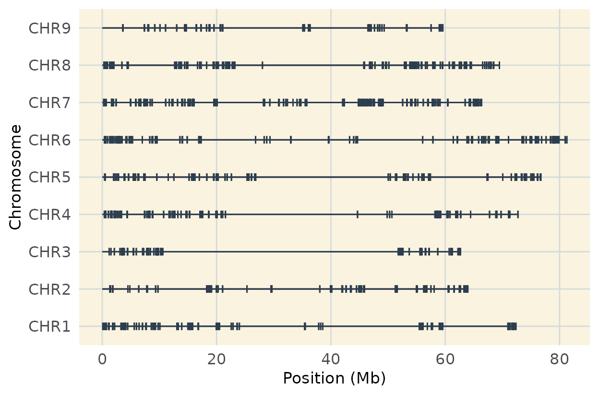
Optional
If you want you can visuzlice a subset (first 50 individuals) of the
reference genome-ordered data using plot_geno() and inspect
haplotype structure across individuals and all chromosomes
haplo_ordered <- plot_geno(geno = as.matrix(geno_genome_order[, 1:50])) +
ggtitle(paste("", ""))
haplo_ordered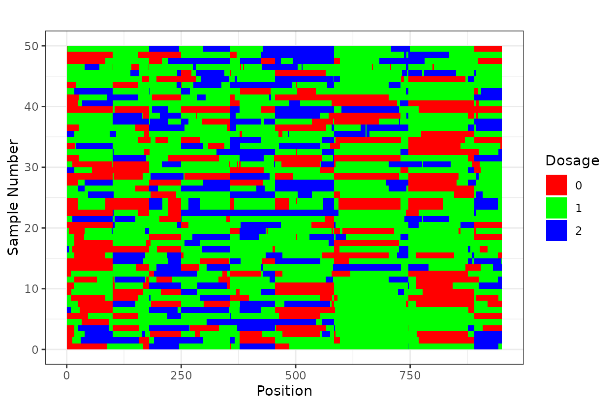
Save
We will save our progress and continue with genetic mapping.
#--- Save genotypes
save(geno_genome_order,
geno_optimized_order, file = "processed_data/R_data/genotype_matrices_hmm_pop2-2025-03-12.RData")